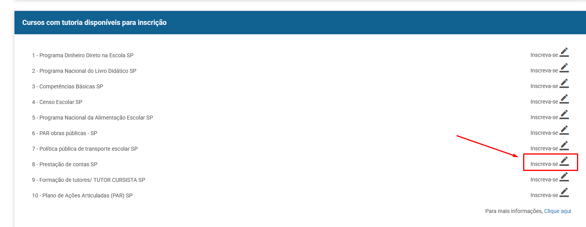

Acesse o SIFE - Sistema de Informação do Programa Formação pela Escola e faça o cadastro e login. Durante o cadastro, na opção "Município de Atuação" escolha Marília. Siga as orientações abaixo.
Primeira Etapa - Cadastro no SIFE
Passo 1: Preencha os dados solicitados.

Passo 2: Preencha os dados solicitados.

Importante: Escolha "Marília" no campo "Município de Atuação".
Passo 3: Atenção! Todos devem digitar Marília em Município de Atuação.
Passo 4: Preencha os dados solicitados.

Passo 5: Pode selecionar "Nenhuma" se for o caso.

Passo 6: A imagem de perfil não é obrigatória. Clique em "Salvar".
Segunda Etapa - Inscrição no Curso Prestação de Contas
Passo 1: Acesse o SIFE da FNDE.
Passo 2: Digite o número do seu CPF.

Passo 3: Digite a senha GOV.

Passo 4: Confirme o login clicando em "OK".

Passo 5: Clique no item de menu "Cursos".

Passo 6: Não faça inscrição em outros cursos.

Passo 7: Clique em "Prestação de Contas SP" para iniciar a inscrição.
